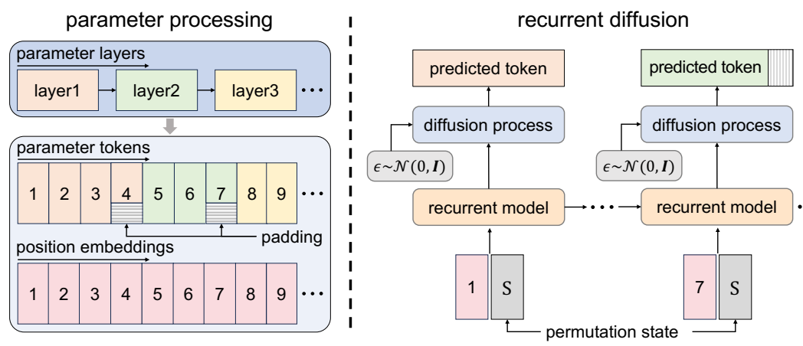
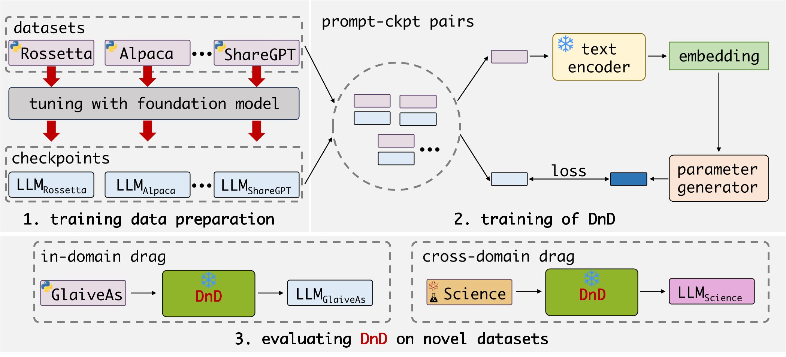
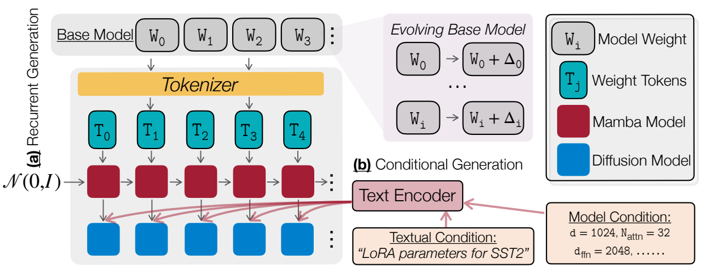

NeurIPS 2025
Research Assistant · CoSTA@NUS Lab
Efficient & Adaptive AI · Cognitive Science
I am a Research Assistant at the CoSTA@NUS Lab, National University of Singapore, advised by Prof. Junyuan Hong. My research interests include efficient and adaptive AI (particularly neural parameter generation) and cognitive science. Before joining NUS, I received my B.Eng. in Artificial Intelligence from Xidian University in 2026. Previously, I was a remote research intern at the National University of Singapore, advised by Yang You and Kai Wang.

NeurIPS 2025


EMNLP 2025 · Findings
* Equal contribution.
Jun — Nov 2025
Object tracking, on-device deployment, and real-world evaluation for edge applications.
Apr — Dec 2024
Advisors: Yang You and Kai Wang. Conditional LoRA and weight-space generation.
Chinese National Scholarship, Ministry of Education, China.
Meritorious Winner, Mathematical Contest in Modeling, COMAP.
Text image restoration with FLUX.2, LoRA fine-tuning, and OCR guidance. 2026
Chart-to-data extraction with classification, visual parsing, and OCR. Kaggle silver medal, 21/608 teams. 2023